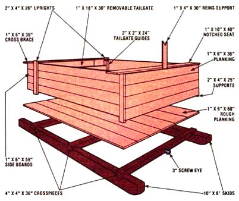

Let It Slide On A Suisse Sled
Constructing a suisse sled for hauling items around the farm.
January/February 1980
by Gladys Mackey Beattie
Here In Quebec, we've found our easy-to-build Suisse sled to be just about the ideal device to handle the kind of haulin' chores that crop up almost daily on a farm. And-since most of the materials needed to Construct the simple freight carrier are Probably already around just waitin' to be used-you can put the versatile sled to work on your homestead for next to nothing!
EASY CONSTRUCTION
To make the 3" X 6' model shown in the photos (a size which we've found to be especially versatile), lay out two 6' posts or Poles that taper from approximately 10, to about 8" in diameter. If the skids have some natural curve at their larger ends, so much the better ... as the bottom front of each runner must be hewn or sawed off to form an angle of approximately W.
With that done, place the posts side by side (&a they'll appear on the finished sled) and cut three notches-each a' deep and 4' wide-in the top of both runners ... to accommodate the three 4" X 4" X 36" crosspieces. (Make sure that the mortices match and are square to the skids and that the skids are parallel when the braces are in place... otherwise, you'll have a cockeyed Suisse that will never run true.) Now, nail the crosspieces securely In place, and your basic frame is complete.
To make the floor of the sled, you'll need approximately six 1" X 6" X 60" boards. Nail the planks solidly to the crosspieces to help keep your sled square under rough conditions.
CUSTOM DESIGN
The size and type of box you build will, of course, depend on how you plan to use your sled. Since we utilize our hauler for garden work, we made the box walls 2411 high and added a removable tailgate. The latter feature makes for easy loading and unloading, but keeps produce from roiling out of the carrier's back when we're climbing the hill that leads to our house ... and also enables us to haul more manure per trip without leaving small deposits of it all along the route to the garden.
While constructing your box, keep your "horsepower" in mind, too. Our container will hold approximately 1/4 ton of manure, which is about all you should expect a smallish draft horse to pull over rough ground. However-if you plan to use your sled exclusively in the winter-remember that a horse can easily pull twice the weight on snow that It can manage over bare earth.
Our sled also includes a one-inch-thick board seat-set across the front of the box-to accommodate little passengers (after all, who can get the horse out of the barn without hearing at least one child's plaintive "Can I come, too?"). The bench doubles as a support for the box's sides, which tend to spread when loaded ... but it should be fastened in such a way as to allow for easy removal if you want to haul long items.
HARNESS UP!
Finally-to connect our horse's singletree to the Suisse-we use a 3" screw eye placed exactly in the center of the front crosspiece. If you live in hilly country and plan to use your sled in winter, you'll probably need to make up some shafts or a tractor pole. (For summer use-or if you're blessed with a flat farm-such devices aren't necessary.)
Since the designs of poles and shaft attachments can vary a great deal, you can suit yourself in this department ... but remember that the hookups must be fastened to the skids rather than the center brace, as is a loose hitch. (As an added precaution, we built a board shelf across the sled-end of our shafts, so any youngster who might tumble forward would land safely on that platform Instead of becoming entangled in the shaft braces and possibly getting run over.)
Once It's built-and the actual construction should take only one afternoon out of your busy life-this little skid along wagon will lighten the burdens of your workaday world. And, as our youngsters will attest, a Suisse sled is fun to have around too!
 STAF PHOTOS BY THE AUTHOR |
 |
|